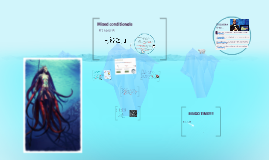

SPATIAL PREZI CANVAS · NODES I – VIII
Click Any Prezi Node to Zoom Into Its Interactive Workout
ACTIVE: NODE I (100% ZOOM)
Node I · Mixed Conditionals
🧊 The Arctic Iceberg
Submerged Counterfactuals & Bingo
Node II · Narrative Arc
🚂 Darjeeling Trail
5-Stop Expedition & Inversions
Node III · Past Criticism
🐾 Silhouette Desk & Cat
Third Conditional Regret Flipper
Node IV · Part 3 Depth
🪨 Celtic Portal Dolmen
A.R.E.A. Philosophical Builder
Node V · Idiomatic Prose
📖 Flying Pages
C1 Literary Collocations
Node VI · C2 Passives
🏦 The Blueprint Vault
Strip-in-a-Box Causatives
Node VII · Exam Strategy
✂️ 4-Step Part 4 Engine
Echo Strike & 3–6 Word Deconstructor
Node VIII · Active Voice First
🎙️ 1-Min Note & 3-Act Timer
4 Trigger Keywords & Live Part 2 Pacer

SUBMERGED DILEMMA QUESTION (FROM PREZI SLIDE 4):
"If you could have chosen your nationality at birth, which one would you want to be today?"
🎯 Authentic Prezi Challenge: "BINGO TIME!!!"
Listen to the candidate's response or formulate your own. Click each C1 structural tile as soon as it is deployed in natural speech:
If + Had V3 ...
Would + V1 (Present)
Would + V1 (Present)
If + Past Simple ...
Would have + V3 (Past)
Would have + V3 (Past)
"Had I known..."
(Inversion)
(Inversion)
"Were it not for..."
(Present Trait)
(Present Trait)
"Provided that..."
(Alternative to If)
(Alternative to If)
"Unless I..."
(Condition)
(Condition)
"Even if I try..."
(Contrast)
(Contrast)
"..., thereby preventing..."
(Participle Result)
(Participle Result)
Model Structure (Past Action → Present Reality):
"**If I had invested** in bilingual fluency a decade ago, I **would not be encountering** these professional language barriers today."
"**If I had invested** in bilingual fluency a decade ago, I **would not be encountering** these professional language barriers today."